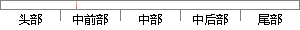

石墨烯的 三维 能带结构
片段位置图

相似结果
相似片段：
烯研究领域的一个新兴热点，本文将对国内外在石墨烯红外光电探测器领域的研究进展进行系统阐述。 2石墨烯的性质 2.1石墨烯的电荷传输性质[19] 单层石墨烯的能带结构可以用紧束缚模型计算得到，其原胞包含两个等价的碳原子，晶格键长 0.142 nm，晶体薄膜的厚度约0.3354 nm。这种特殊的晶体结构导致了石墨烯的独特
| 对比库： | 已发表资源库 |
| 来源： | "Research Progress in Graphene-Based Infrared Photodetectors", Laser & Optoelectronics Progress, 2015. 查看来源 |
| 相似率 | 75% （轻度抄袭） |